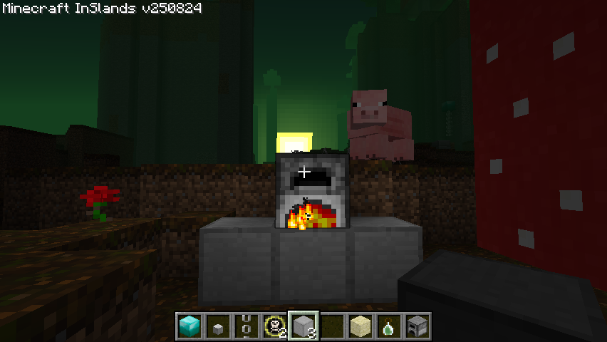
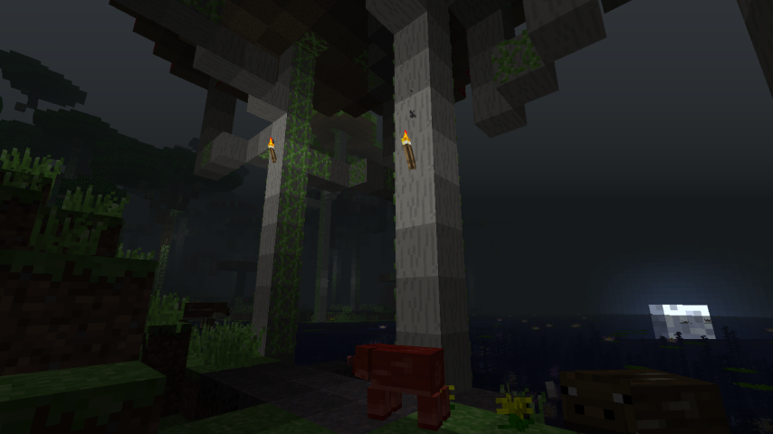
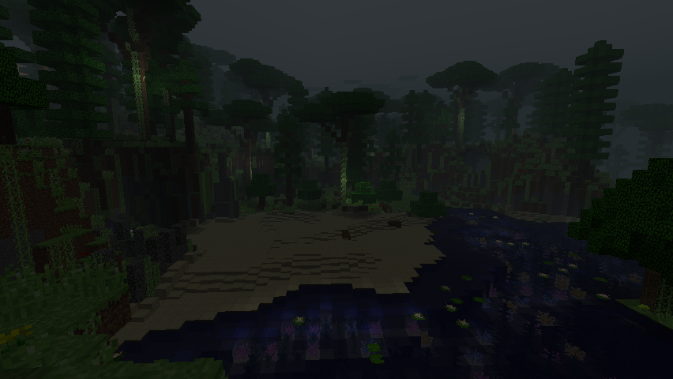

Intro
Minecraft Inslands started as en experiments. I wanted to be able to play minecraft in really dated or limited hardware, specially hardware with slow storage, such as the early Asus Eee PC or Atom based laptops with MicroSDs cards on slow USB-like connections. Indev generated the whole world in memory once and played from there, but such an old version was not very well optimized and lacked many features I personally miss. So I had the idea on writing a custom WorldProvider for b1.7.3 that created limited size worlds at once and stored them complete in RAM, so it could take advantage of a chunked world for better processing but it didn't have to rely on reading and writing new chunks to disk.
Inslands generates a finite world (3 sizes available) and terraforms it so it forms an island surrounded by ocean, or a set of floating islands. Sometimes you get a big bunch of land, sometimes you just get a tiny archipielago.
Then I found it suitable to bring back the original Indev level themes and try to expand from there. When Inslands is complete, each level theme will have specific gameplay items and different experiences.
Inslands is far for complete but I've decided to release a new build everytime I complete a set of features.
To play Inslands open b1.7.3's minecraft.jar and/or minecraft_server.jar with a file archiver, delete META_INF, and copy all files in the zips inside, or use the "add to jar" feature available in some launchers.
This mod will be eventually released as open source if form of patches, but if you are really interested get to contact me so I can invite you to the private github repo right now.
This mod includes modified portions of or features inspired by these mods: Twilight Forest (for b1.7.3 & r1.3), Deadly Mosters, Better Dungeons (for b1.8 & r1.0.0), the Aether, Hippoplatimus pistons and a couple of BOP trees (currently as placeholders).
Themes in the server
To select a level theme in the server use theme=Normal, Hell, Paradise or Forest in server.properties.Releases (latest first)
v250825 - Bug fixes & stability
I resumed development like a month ago and I've been finishing up unfinished shit, fixing tons of bugs and glitches, and mostly reoganising all the code base and doing lots of refactoring so the unfathomable amount of copypasted and hardcoded stuff in the original b173 code base keeps decreasign.
Besides less bugs, better performance and enhanced stability you can find (assorted)
- The 15 tree types you may find have their own textures. Only one plank tho, I hate having a shitload of different planks. Textures are placeholder, need to make them more "alphay".
- Early but working Hell Theme Nether. i.e. hell's hell.
- You can enable fancy grass (only really visible if you chose the "Biomes" theme).
- Smelt stone for smooth stone
- Added homing behaviour optional for old AI mobs. Not yet used
- Added Derp, the mob I use to try stuff. Try to /summon Derp.
- Added the witch hut to the Poison Island theme.
- Added the Poison Island theme from my older Indev based ModLoader example
v250825 client | v250825 server | v250825 MultiMC instance
v240825 - Preliminary nether
I just forgot to update the site for a while so there are some in-dev versions missing. Most things have been tweaked, content and engine. This should perform even better. Than before. Limited world size is now taken in account for generation, spawning, block ticking, etc.
- You can go to the nether!
- Supported: level themes affect the nether, but there's only personalization in the forest theme nether right now.
- A bunch of enhancements. Complex themes such as the forest theme should have less problems to actually generate a "good" island.
- Can't remember and can't be bothered XD
v240625 client | v240825 server
v240625 - Theme forest features and engine boost!
This update took longer than expected 'cause midway I adapted a mixture of optifine for b1.7.3 and optifine for r1.2.5. I also modified the way World updates entities so only entities in range are updated. This engine never unloads chunks so this is mandatory. The game is now very playable in old and weak hardware, which was one of the goals.
- Optifine! That means you can tweak for speed, get free mipmaps, and a much faster chunk renderer and tessellator.
- Paradise theme is always at noon, mid-summer.
- Forest theme is now a permanent twilight. Seasons do hapen, tho.
- Configurable sunset/sunrise colours per theme basis. Activated for the Forest theme.
- Underhill, hedge and minotaur mazes for the Forest theme. Minor features from beta TF also added
- Twilight animals (from beta TF) and baddies (from 1.10) for the Forest theme.
- New level theme test: multi-biome, using beta-like ramps and colourizers. All cached, so it shoudln't impact performance. Works better on the Alpha (in fact, InfHell2's) world generator.
Known problems
Hedge mazes don't hollow out the space so portions of them may not be accesible. Will be fixed for next release
v240625 client | v240625 server
v240607 - Theme paradise features

- Selecting theme paradise pre-selects the sky generator if no world type was selected.
- Sky generator works again. Noise gen has been slightly modified so land chunks are thicker so they can contain more dungeons.
- Falling into the void works again.
- Aerclouds for paradise floating islands (from Aether).
- Aether Bronze dungeons adapted to the fact that levels are small and they have to spawn more often, to allow for hollower sections.
- Find crying obsidian, obsidian wands and saddles in Bronze Dungeons.
- Substituted most vanilla animals for Aether variants. Fly to other islands using saddled pigs or cows.
- Small fixes
Known problems
Still using b1.7.3 netcode, a situation which won't change for a while. So still wobbly server.
v240607 client | v240607 server
v240602 - Theme hell features

Very few trees have an actual canopy, so you must find a way to make wood renewable. Also, seeds only drop from tall grass and there's no grass. Luckily, there's plenty of fossils.
- Plant acorn on tilled field, fertilize to get new sapling.
- You can fertilize dead dirt to get new grass (small chance) or mushrooms.
- Big mushroom blocks can be smelted into charcoal. Charcoal and sticks gives you two torches.
- Craft an iron boat with 6 iron ingots.
- Added achievements for all the above.
- Eating animation.
- Small fixes.
Known problems
Wobbly server, need to do some proper review or port r125 netcode like in Infhell. Will leave for later (next?).